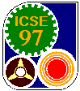

Organizing Committee
W. Richards Adrion
CRICCS
Department of Computer and Information Science
307 Lederle Graduate Research Center
PO Box 34610
University of Massachusetts, Amherst
Amherst, MA 01003-4610, USA
E-mail: adrion@cs.umass.edu
Tel: +1-413-545-2475
Fax: +1-413-545-3729
Contact: icse-97-program@ics.uci.edu
Alfonso
Fuggetta
Dipartimento di Elettronica e Informazione
Politecnico di Milano
P.za Leonardo da Vinci, 32
20133 Milano, Italy
E-mail: fuggetta@elet.polimi.it
Tel: +39-2-239-93540
Fax: +39-2-239-93411
Richard N.
Taylor
Information and Computer Science
University of California, Irvine
Irvine, California 92717-3425, USA
E-mail: taylor@ics.uci.edu
Tel: +1-714-824-6429
Fax: +1-714-824-4056
Anthony I. Wasserman
Software Methods & Tools
176 Gold Mine Dr.
San Francisco, California 94131, USA
E-mail: tonyw@methods-tools.com
Guillermo Arango (USA)
David Barstow (USA)
Don Batory (USA)
Martin Cagan (USA)
Aniello Cimitile (Italy)
Bruce Croft (USA)
Michael Cusumano (USA)
Jean-Claude Derniame (France)
Laura K. Dillon (USA)
David Eichmann (USA)
Jacky Estublier (France)
Herm Fischer (USA)
Kokichi Futatsugi (Japan)
John Gannon (USA)
David Garlan (USA)
Marie-Claude Gaudel (France)
Sol Greenspan (USA)
William Griswold (USA)
Jonathan Grudin (USA)
Mehdi Harandi (USA)
Mary Jean Harrold (USA)
Ellen Isaacs (USA)
Paola Inverardi (Italy)
Matthias Jarke (Germany)
Ross Jeffery (Australia)
Takuya Katayama (Japan)
Richard Kemmerer (USA)
Jeffrey Kramer (UK)
Mark Linton (USA)
Bev Littlewood (UK)
Tom Maibaum (UK)
John McHugh (USA)
Mark Moriconi (USA)
John Mylopoulos (Canada)
Oscar Nierstrasz (Switzerland)
David Notkin (USA)
Dewayne Perry (USA)
Mauro Pezzè (Italy)
Adam Porter (USA)
David Rosenblum (USA)
Will Tracz (USA)
Axel van Lamsweerde (Belgium)
Lawrence Votta (USA)
Bruce Waddington (USA)
Brian Warboys (UK)
Martin Wirsing (Germany)
Alexander Wolf (USA)
Anne Duncan, Digital Equipment Corporation (USA)
John Favaro, Intecs (Italy)
Joe Keller, SunSoft (USA)
Mary E.S. Loomis, Hewlett-Packard (USA)
Ann Miller, Motorola (USA)
Marie Silverthorn, Texas Instruments (USA)
John Swainson, IBM Canada Ltd. (Canada)
Ed Weller, Bull (USA)
Technical Program
- Workshops
- Reino Kurki-Suonio, Tampere University of Technology (Finland)
- Lawrence G. Votta, AT&T Bell Laboratories (USA)
- Tutorials
- Mehdi Jazayeri,
Technical University of Vienna
(Austria)
- Patricia Oberndorf, SEI/Carnegie Mellon University (USA)
- Ed Weller, Bull HN Information Systems (USA)
- Panels
- David Leblang, Atria Software
(USA)
- Colin Potts, Georgia Institute of Technology (USA)
- Software Engineering in Organizations: Lessons and Status Reports
- Ian Thomas, Ian Thomas and Associates (USA)
- Elliot J. Chikofsky, DMR Group Inc. (USA)
- Research Demonstrations
- Anne Duncan, Digital Equipment Corporation (USA)
- Volker Gruhn, LION GmbH (Germany)
- Barbara Lerner, University of Massachusetts, Amherst (USA)
- Doctoral Consortium
- Michal Young,
Purdue University (USA)
- Posters
- Debra J. Richardson,
University of California, Irvine (USA)
- Publications
- Debra Brodbeck,
University of California, Irvine
(USA)
- World-Wide Web
- Roy T. Fielding,
University of California, Irvine
(USA)
- Neno Medvidovic,
University of California, Irvine
(USA)
- Conference Proceedings
- Kari Nies,
University of California, Irvine
(USA)
- Conference Newsletter Editor and Producer
- Will Tracz, Loral Federal Systems (USA)
- Student Volunteers Program
- Kevin J. Sullivan, University of Virginia (USA)
- Gregory Abowd, Georgia Tech University (USA)
- Exhibits
- Danieli & O'Keefe Associates, Inc. (USA)
- Americas
- Will Tracz
Loral Federal Systems
USA
E-mail: tracz@lfs.loral.com
- Canada
- Nazim Madhavji
School of Computer Science
McGill University
3480 University Street
Montreal, Quebec, CANADA, H3A 2A7
E-mail: madhavji@cs.mcgill.ca
Tel: +1-514-398-3740
Fax: +1-514-398-3883
- Japan/Asia
- Koji Torii
Nara Institute of Science and Technology
Graduate School of Information Science
8916-5, Takayama, Ikoma, Nara 630-01, Japan
E-mail: torii@is.aist-nara.ac.jp
Tel: +81-7347-2-5310
Fax: +81-7347-2-5319
- Australia/New Zealand
- Chris Marlin
The Flinders University of South Australia
GPO Box 2100
Adelaide 5001, Australia
E-mail: marlin@cs.flinders.edu.au
Tel: +61-8-201 2662
Fax: +61-8-201 3626
- Europe
- Michel Lemoine
CERT/ONERA-DERI
2, Ave. E. Belin
31055 Toulouse CEDEX, France
E-mail: Michel.Lemoine@cert.fr
Tel: +33-62-25-26-45
Fax: +33-62-25-25-93
Sponsoring Societies
- Liasons
- IEEE: Anne-Marie Kelly
- ACM: Julie Goetz
- Chairs
- ACM SIGSOFT: Lori Clarke, University of Massachusetts, Amherst (USA)
- IEEE TCSE: Elliot Chikofsky, DMR Group Inc. (USA)
<icse-97-webmaster@ics.uci.edu>
1997 International Conference on Software Engineering
Last modified: 05 Feb 1997